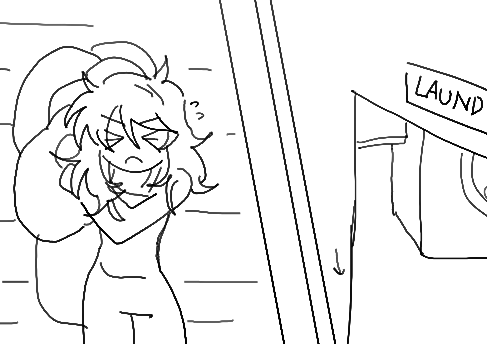
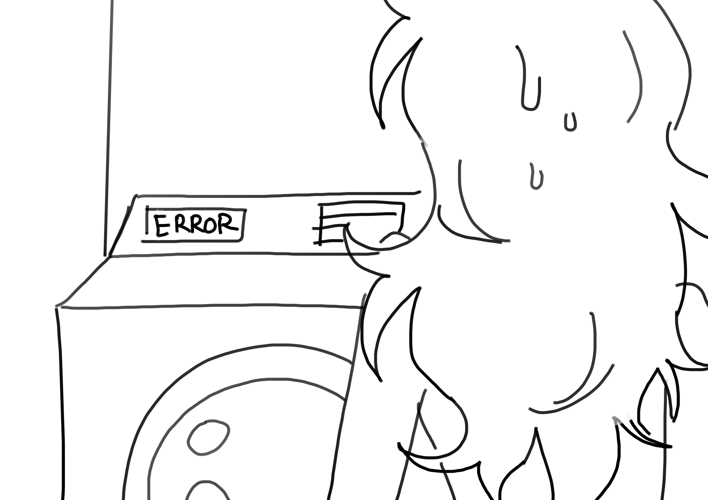
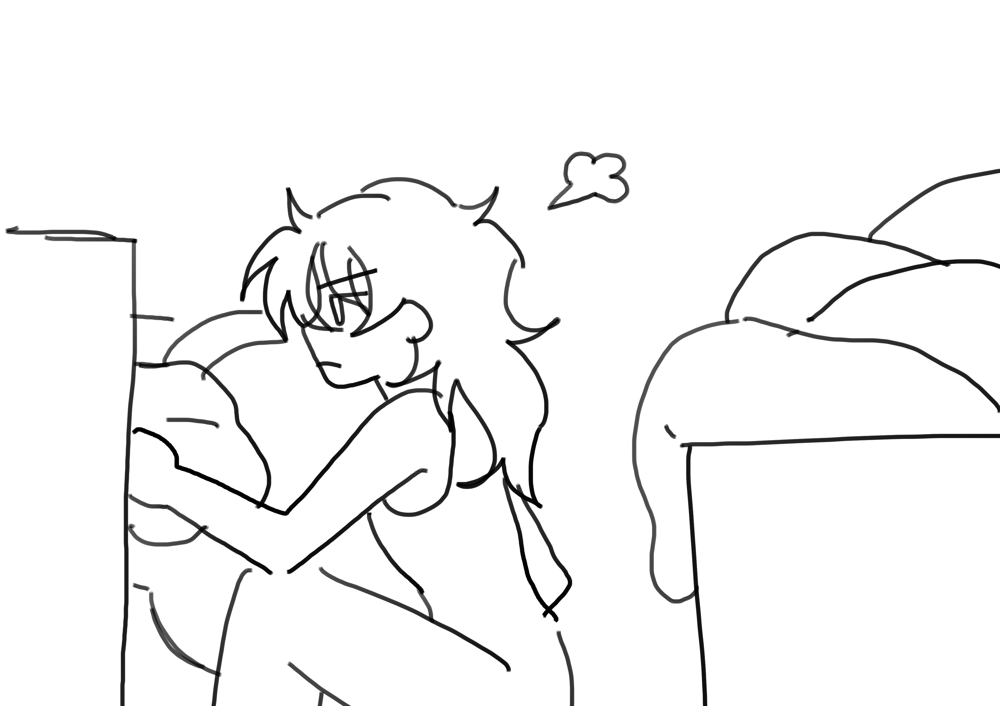
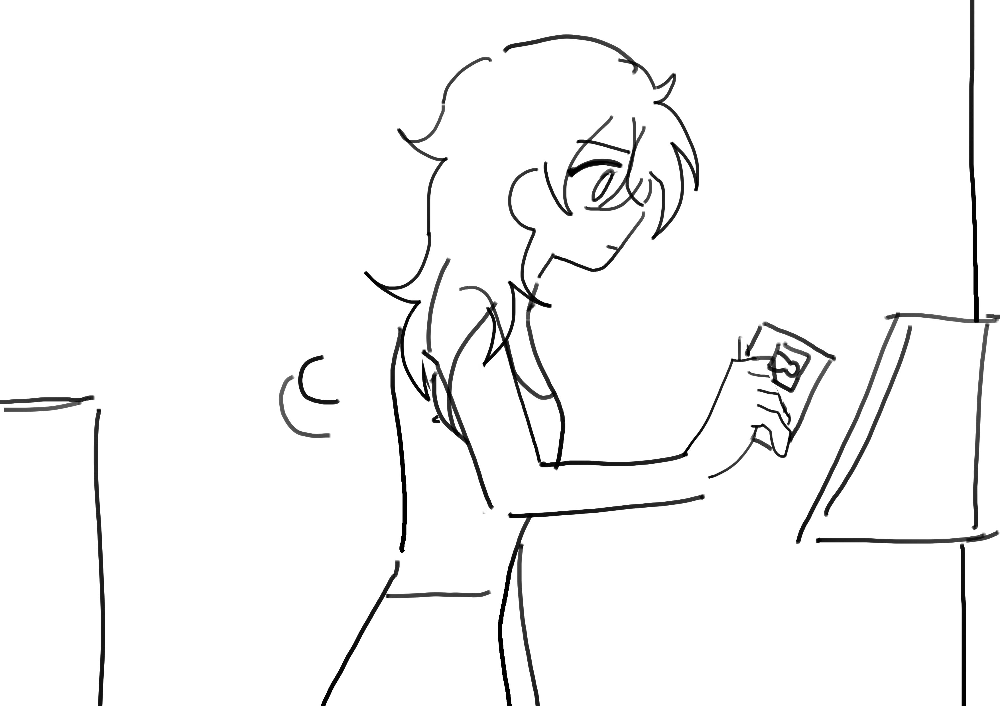
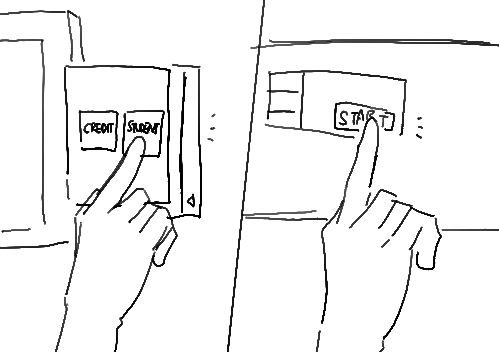
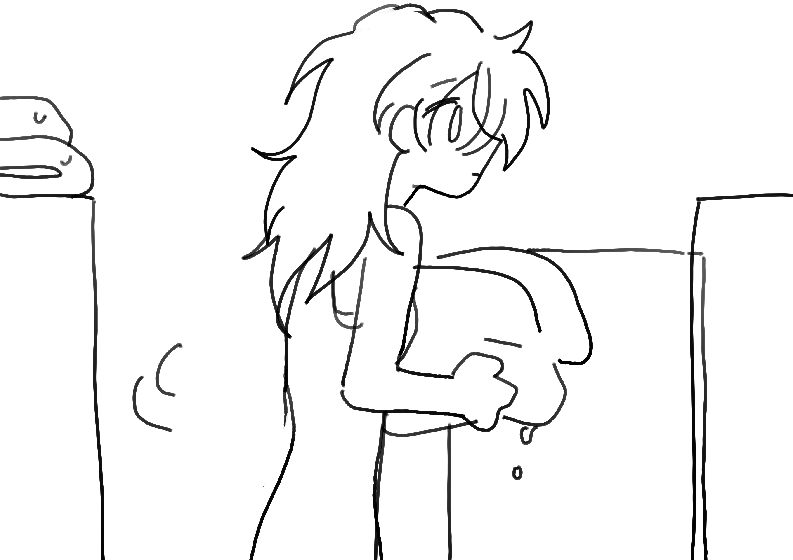
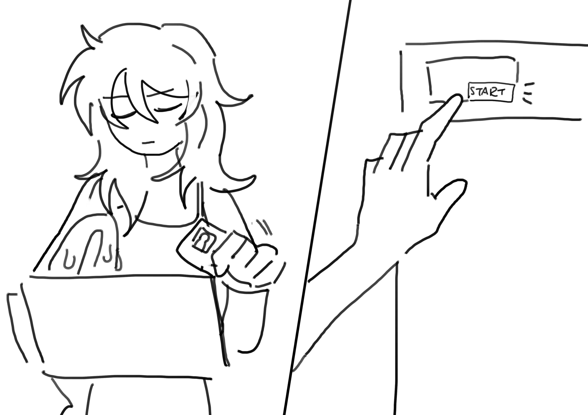
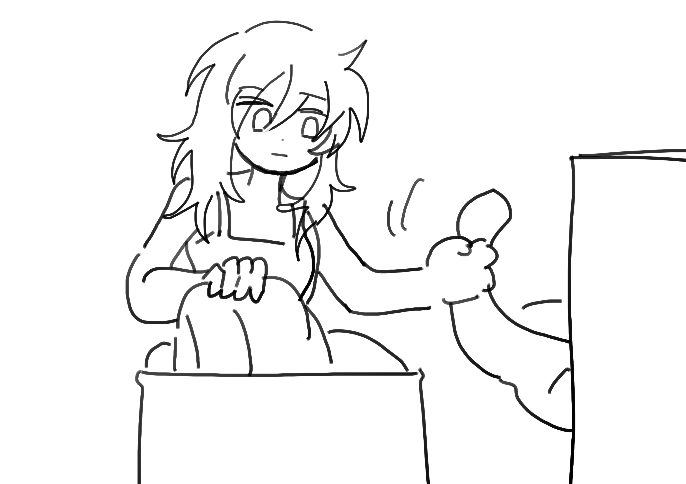
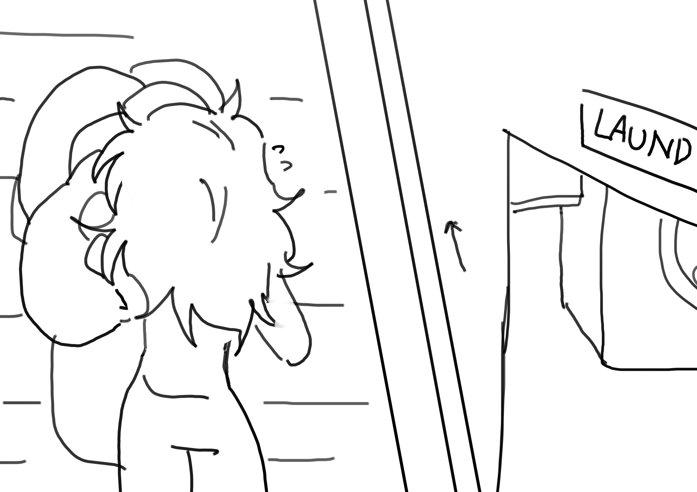
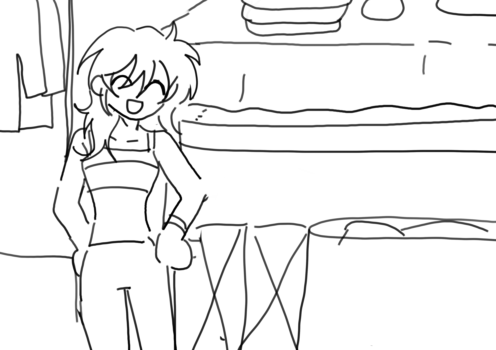

Part 4: Storyboards
It has been about two weeks since Frances has run laundry. Observing the mountain of dirty clothes under her bed, she decides to run the laundry.

She carries her baskets of light and dark clothes, puffers, and sheets to the laundry room.

Upon entering the laundry room, she realizes that one of the washing machines out of the four is having a connection error from the kiosk. She is frustrated and decides to give up on washing her puffers.

She moves all of her clothes into the washing machine, separated by their color and purpose. She fills three washing machines to the brim.

To start the washing machine, she approaches the laundry kiosk and swipes her student ID.

Then, she approaches the laundry kiosk and selects pay with a student ID option. She turns back to the washing machines and clicks “start” on all three machines.

Once the washing machines are done, she moves the wet clothes into the drying machines. She again separates them by purpose and balances the load to ensure the clothes can fluff up in the dryers.

She repeats the process of swiping the card, selecting pay with a student ID option, and walking over to the dryers.

Once the dryers are done, she brings her clean laundry basket to bring them back. At this point, she is fatigued from spending approximately 2 hours on laundry.

She brings her clean laundry back up the stairs to her room.

Once she returns to her room, she happily gathers and folds all of her clothes.